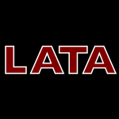
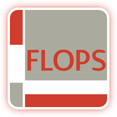
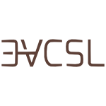
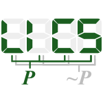

23 papers:
 SAC-2015-RegoMP #approach #detection #learning
SAC-2015-RegoMP #approach #detection #learning- A supervised learning approach to detect subsumption relations between tags in folksonomies (ASdCR, LBM, CESP), pp. 409–415.
- LATA-2013-HashimotoSISF #bottom-up #transducer
- Determinacy and Subsumption for Single-Valued Bottom-Up Tree Transducers (KH, RS, YI, HS, TF), pp. 335–346.
- GRAPHITE-2012-ZambonR #graph
- Graph Subsumption in Abstract State Space Exploration (EZ, AR), pp. 35–49.
- SEKE-2012-GregoireR #component
- Disabling Subsumptions in a Logic-Based Component (ÉG, SR), pp. 243–248.
 ICLP-J-2011-CruzR #evaluation #logic programming #performance #retrieval #source code
ICLP-J-2011-CruzR #evaluation #logic programming #performance #retrieval #source code- Efficient instance retrieval of subgoals for subsumptive tabled evaluation of logic programs (FC, RR), pp. 697–712.
- ICLP-J-2011-RiguzziS #nondeterminism #reasoning
- The PITA system: Tabling and answer subsumption for reasoning under uncertainty (FR, TS), pp. 433–449.
 CAV-2010-AbdullaCCHHMV #automaton #simulation #testing
CAV-2010-AbdullaCCHHMV #automaton #simulation #testing- Simulation Subsumption in Ramsey-Based Büchi Automata Universality and Inclusion Testing (PAA, YFC, LC, LH, CDH, RM, TV), pp. 132–147.
- ICLP-2010-RiguzziS10 #logic programming #reasoning #source code
- Tabling and Answer Subsumption for Reasoning on Logic Programs with Annotated Disjunctions (FR, TS), pp. 162–171.
- ICLP-2010-SantosM10 #named #prolog
- Subsumer: A Prolog theta-subsumption engine (JS, SM), pp. 172–181.
 SAT-2005-Zhang05 #on the fly
SAT-2005-Zhang05 #on the fly- On Subsumption Removal and On-the-Fly CNF Simplification (LZ), pp. 482–489.
- SAT-2002-EglyWP #problem
- On deciding subsumption problems (UE, SW, RP), p. 36.
 POPL-2001-Vouillon #calculus
POPL-2001-Vouillon #calculus- Combining subsumption and binary methods: an object calculus with views (JV), pp. 290–303.
- FLOPS-1999-JohnsonRRR #evaluation #logic programming #performance #source code
- A Space Efficient Engine for Subsumption-Based Tabled Evaluation of Logic Programs (EJ, CRR, IVR, PR), pp. 284–300.
- CSL-1998-Pichler #complexity
- On the Complexity of H-Subsumption (RP), pp. 355–371.
- JICSLP-1998-RaoRR #scheduling
- On the Optimality of Scheduling Strategies in Subsumption-based Tabled Resolution (PR, CRR, IVR), pp. 310–324.
- TAGT-1998-KreowskiV
- Redundancy and Subsumption in High-Level Replacement Systems (HJK, GV), pp. 215–227.
 ICALP-1997-Dami #fault #reduction #runtime
ICALP-1997-Dami #fault #reduction #runtime- Labelled Reductions, Runtime Errors and Operational Subsumption (LD), pp. 782–793.
 ICML-1994-KietzL #algorithm #induction #logic programming #performance
ICML-1994-KietzL #algorithm #induction #logic programming #performance- An Efficient Subsumption Algorithm for Inductive Logic Programming (JUK, ML), pp. 130–138.
- ML-1992-ConklinG
- Spatial Analogy and Subsumption (DC, JIG), pp. 111–116.
 PLILP-1992-BarthelemyC #automaton
PLILP-1992-BarthelemyC #automaton- Subsumption-oriented Push-Down Automata (FB, EVdlC), pp. 100–114.
- ML-1991-MahadevanC #architecture #learning #scalability
- Scaling Reinforcement Learning to Robotics by Exploiting the Subsumption Architecture (SM, JC), pp. 328–332.
- LICS-1990-DorreR #algebra #unification
- On Subsumption and Semiunification in Feature Algebras (JD, WCR), pp. 300–310.
- SLP-1986-HoddinottE86 #named #prolog #similarity
- PROLOG: Subsumption of Equality Axioms by the Homogeneous Form (PH, EWE), pp. 115–126.